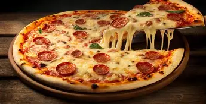
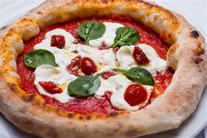
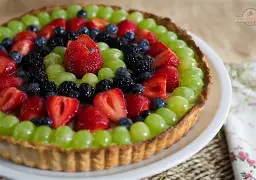
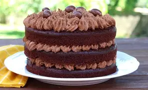

Pizza Vomitiva
Masa madre artesanal con tomate del mercadona, mozzarella y 2 o 3 microrodajas de peperoni de las sobras de la cesta de navidad.
Las mejores pizzas y tartas en un radio de 1m2

Masa madre artesanal con tomate del mercadona, mozzarella y 2 o 3 microrodajas de peperoni de las sobras de la cesta de navidad.

Tranchete requemado con tomate cherry del bueno y unas hojas que ha traido el viento.

Fresas compradas a última hora en el paquistaní con crema mascarpone para enmascarar.

Chocolate "belga" puro con base crujiente (en un principio era bizcocho).